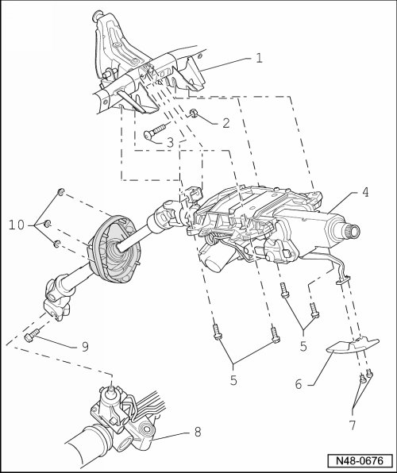

Steering Column Assembly Overview
Steering Column Assembly Overview

1 Lateral control arm for steering column
2 Self locking nut
• M8.
• 20 Nm.
• Observe tightening sequence, refer to --> [ Tightening Sequence ]
• Always replace after removal.
3 Bolt
• M8 x 45.
4 Steering column
• Can only be replaced as a unit.
• Removing and installing, refer to --> [ Steering Column ] Steering Column.
5 Bolt
• M8 x 28.
• 20 Nm.
• Observe tightening sequence.
6 Handle
7 Bolt
• M5 x 8.
• 4.5 Nm.
8 Power steering gear
9 Bolt
• M10 x 35.
• 40 Nm + 90° additional turn.
• Always replace after removal.
10 Self locking nut
• M6.
• 4 Nm.
• Always replace after removal.
Tightening Sequence

- Tighten bolts - 1 to 4 - to tightening specification in sequence illustrated.
- Tighten nut - 5 - to tightening specification.